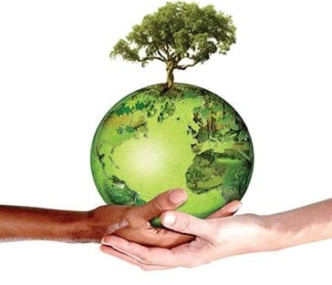
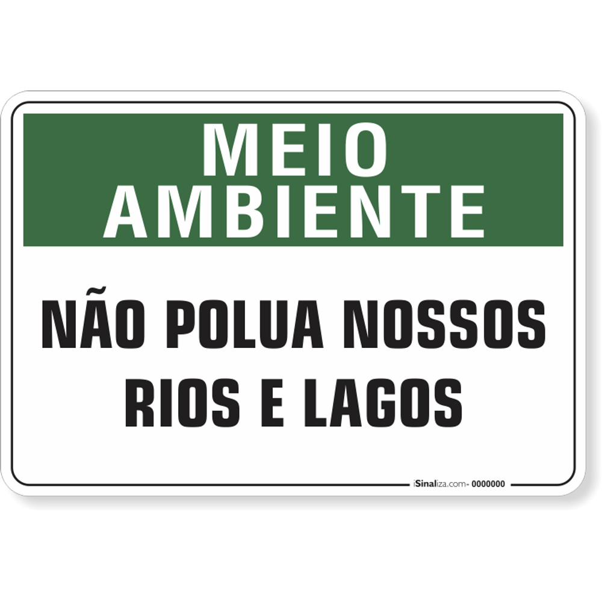

O que é a preservação do meio ambiente?
Preservação do meio ambiente refere-se ao conjunto de práticas que visam proteger a natureza das ações que provocam danos ao meio ambiente. Devido ao atual modelo econômico, baseado em elevados níveis de consumo, o ser humano tem causado inúmeros prejuízos para a flora e fauna no planeta, ocasionando desequilíbrios ambientais irreversíveis. Muitas vezes usados como sinônimos, preservação e conservação ambiental representam ideias diferentes dentro do campo da ecologia. Mais à frente iremos mostra a diferença entre eles.
Importância da preservação do meio ambiente
O artigo 225 da Constituição Federal afirma que o meio ambiente é um “bem de uso comum do povo e essencial à sadia qualidade de vida, impondo-se ao Poder Público e à coletividade o dever de defendê-lo e preservá-lo para as presentes e futuras gerações”. A preservação do meio ambiente é fundamental para manter a saúde do planeta e de todos os seres vivos que moram nele. Para celebrar o esforço em proteger os recursos naturais.
Os seres humanos só conseguem sobreviver graças à natureza. Afinal, usamos os animais e plantas para nos alimentar, água para beber e tomar banho, e muitos outros recursos que nem percebemos.
A importância de preservar rios e nascentes.
O Brasil possui 12% da reserva de água doce do mundo e, apesar da abundância, nas últimas décadas, diversas ações como o desmatamento das matas ciliares, o aquecimento global e o uso inadequado dos solos têm contribuído para a diminuição dos volumes e da qualidade da água. Os rios são fontes de um dos recursos naturais indispensáveis aos seres vivos. Além disso, têm grande importância cultural, social e econômica, uma vez que a agricultura, a pecuária e as indústrias dependem da água para obterem seus produtos e a falta desse recurso gera graves consequências ambientais e sociais. Neste sentido, é de suma importância a conservação dos rios e nascentes, pois a água é fonte da vida, um recurso natural essencial, seja como meio de vida de várias espécies vegetais e animais ou como fator de produção de bens de consumo. Além disso, a agricultura, a pecuária e as indústrias dependem da água para obterem seus produtos e a falta desse recurso gera desemprego e aumento do preço no produto final. Vale lembrar também que as nascentes têm um grande papel, pois são onde culminam as águas dos lençóis, reservatórios subterrâneos, que formam os córregos, riachos e rios, sendo de suma importância, uma vez que auxiliam na manutenção da umidade do solo, garantem o fluxo dos cursos d’água e também servem para uso humano.
Para a conservação de nascentes e mananciais em propriedades rurais, podem ser adotadas algumas medidas de proteção do solo e da vegetação, que vão desde a eliminação das práticas de queimadas até o enriquecimento das matas nativas. Além disso, outros cuidados também são importantes para a preservação delas. Por exemplo, evitar a construção de currais, chiqueiros, galinheiros e fossas sépticas nas proximidades acima das nascentes, pois, com a chuva, os dejetos podem contaminá-las. Da mesma maneira, o desmatamento no entorno das nascentes e o acúmulo de lixo nas regiões próximas a elas também precisam de atenção. O desmatamento e a ocupação irregular do solo devastam as áreas de cabeceira ou de recarga, responsáveis pelo reabastecimento dos lençóis freáticos, aquíferos e nascentes, o que contribui em grande parte com a redução da quantidade e da qualidade de água disponível no planeta. Essas localidades são cruciais para o reabastecimento dos lençóis freáticos, aquíferos, das nascentes e, consequentemente, dos rios.
De tal maneira, a preservação dos rios é igualmente importante. E algumas simples mudanças de hábitos ajudam a mantê-los sempre em bom estado. Você já chegou a pensar que o lixo jogado nas rodovias quase sempre é conduzido para os rios? Portanto, não custa nada guardá-lo em dentro do veículo. O hábito de jogar bitucas de cigarro nas estradas também é outro problema, uma vez que provoca queimadas que podem atingir as matas ciliares, que são de vital importância para a preservação dos nossos rios. Dessa forma, é preciso entender que precisamos das nascentes e, portanto, o cuidado com os bens que nos são essenciais cabe somente a nós.
Então é isso! Espero que você tenha gostado do nosso artigo sobre o meio ambiente, abordamos sobre rios e lagos e alguns cuidados que devemos ter.